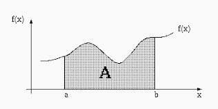
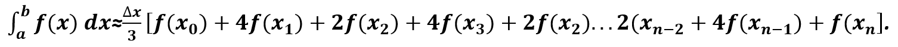
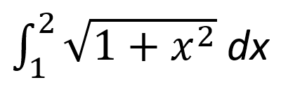
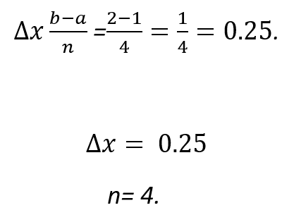
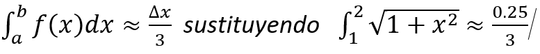
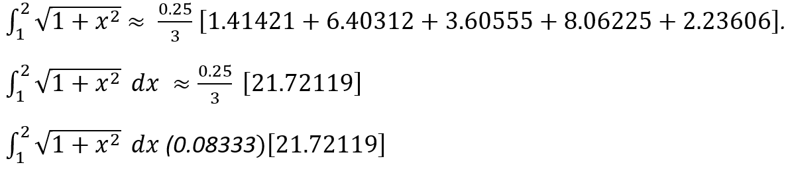

La regla de Simpson es un método que calcula una integral definida, mediante una aproximación más precisa del área bajo una curva, ya que se conectan grupos de puntos sucesivos sobre la curva mediante parábolas. Al sumar las áreas bajo las parábolas se obtiene el área aproximada bajo la curva (definición de la integral).

FÓRMULAS DE SIMPSON:
Debemos tomar en cuenta que para poder hacer el desarrollo de la ecuación de una parábola se necesitan
tres puntos que son el intervalo de integración de (a, b), y n que nos permite saber cuántos
subintervalos encontraremos. Y la fórmula es:
NOTA: Debemos recordar que n tiene que ser par.
Fórmula general de Simpson:
Resolver la siguiente integral.
Paso 1
El cálculo consiste en definir los límites de integración los cuales serán representadas por:
b= límite superior.
a = límite inferior.
n = determina el número total de subintervalos en el rango (a, b) el cual debe ser par.
Tenemos que establecer lo siguiente, cuánto valen: recordemos que nuestros intervalos son de (1 a
2)
(apuntes-metodos-numericos-integracion-y-diferenciacion)
b=2
a=1
n= (en ocasiones vienen dados los valores y en ocasiones son arbitrarias), le daremos 4.
Paso 2
Realizamos la sustitucion de valores

Paso 3
Comenzamos haciendo la suma: x0=a será 1
x0= 1
x1= 1+0.25=1.25 se obtiene este resultado porque se sumó el anterior y el resultado de
∆x.
x2= 1.25+0.25=1.5 se obtiene de sumar el resultado anterior y ∆x.
x3 =1.5+0.25=1.75 se obtiene de sumar el resultado anterior y ∆x
x4 = 1.75+0.25=2 se obtiene de sumar el resultado anterior y ∆x.
Paso 4 Lo que haremos a continuación es sustituir en la función todos los valores de X:

Paso 5
Continuamos con: [f(x0)sustituyendo f(1)]
En los siguientes f(x) sustituiremos los valores obtenidos por las sumas:
+4f(x1)sustituyendo +4f (1.25)
+2f(x2) sustituyendo +2f (1.5)
+4f(x3) sustituyendo +4f(1.75)
+2f(x4) sustituyendo +2f (2), como solamente son 4 subintervalos esto queda así: x_4=2.
Paso 6
Comenzamos a sustituir los valores obtenidos en la función original y resolvemos para obtener los
nuevos valores, y lo hacemos de la siguiente manera:
A los siguientes valores los sustituimos y obtenemos resultados de la misma forma:
+4f (1.25) sustituimos y resolvemos +4 √(1+1.252) = +4√2.5625 = 6.403124.
+2f (1.5) sustituimos y resolvemos +2√(1+1.52 ) = +2√3.25 = 3.60555
+4f (1.75) sustituimos y resolvemos +4√(1+1.752 ) = +4√4.0625 = 8.06225
+(2) sustituimos y resolvemos =√(1+22 ) = √5= 2.23606.
Al obtener todos los valores, se remplazan en la ecuación y quedaría así:

Primero realizamos la sumatoria de los valores dentro del corchete, y posteriormente lo multiplicamos
por el valor obtenido de la división, y el resultado es: una aproximación de la integral.
≈: 1.810026U2
El método de Simpson se utiliza para muchas actividades de la vida cotidiana algunos ejemplos son:
APLICACIÓN DEL MÉTODO DE SIMPSON EN INGENIERÍA:
Un topógrafo podría necesitar conocer el área de un campo limitado
Un ingeniero en hidráulica tal vez requiera conocer el área de la sección transversal de un río.
Un ingeniero en estructuras quizá necesite determinar la fuerza neta ejercida por un viento no
uniforme que sopla contra un lado de un rascacielos. Ver aquí
APLICACIÓN DEL MÉTODO DE SIMPSON EN FÍSICA: En física y mecánica, nos ayuda a calcular áreas, volúmenes, solidos, calculo y trabajo. Ver aquí
APLICACIÓN DEL MÉTODO DE SIMPSON EN MEDICINA (CARDIOLOGÍA): En medicina actualmente se requieren métodos numéricos para medir, calcular o verificar el daño de un corazón respecto a las áreas afectadas de este. Ver aquí
Hemos creado una plantilla en excel donde puedes resolver las integrales por el método de simpson
Descarga Aqui
Chapra, S., & Cunale, R. (2007). MÈTODOS NUMÈRICOS PARA INGENIEROS. MaGraw-Hill Interamericana.
Aguilar Marquez, A., & Valopai Bravo, f. (2014). MATEMATICAS SIMPLIFICADAS. PEARSON.
apuntes-metodos-numericos-integracion-y-diferenciacion. (s.f.).
http://anyflip.com/nzlt/gsop/basic/701-750. (s.f.).
http://repositorio.uned.ac.cr/multimedias/metodos_numericos_ensenanza/modulo4/descripcion.html.
(s.f.).
https://matematica.fandom.com/wiki/Integracion_Numerica. (s.f.).
Leithold, l. (1987). EL CÀLCULO con geometria analitica. mexico: HARLA